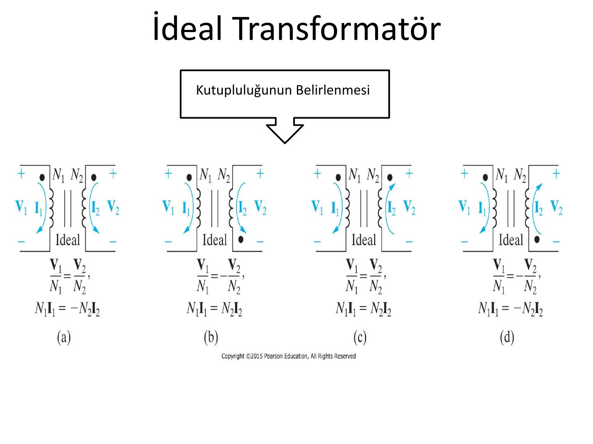
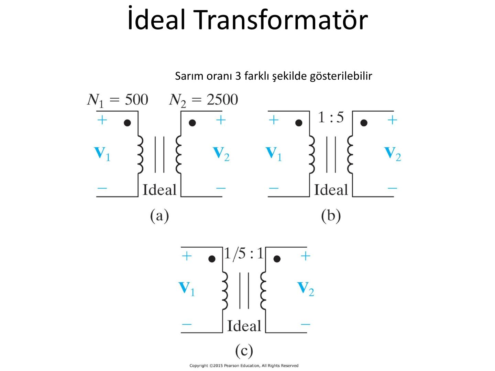
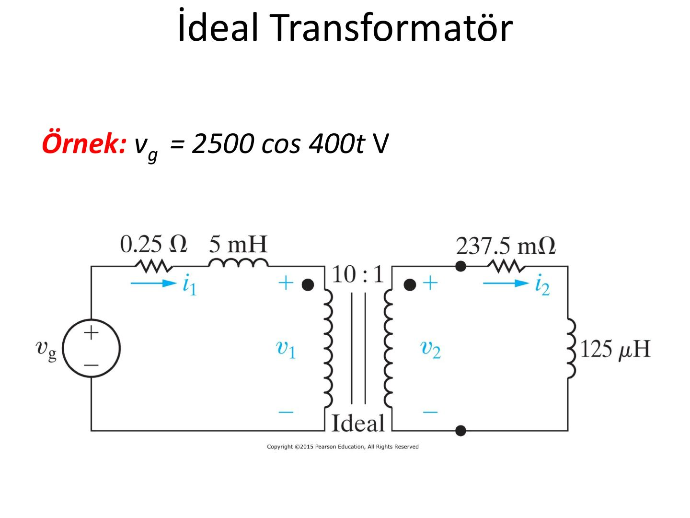
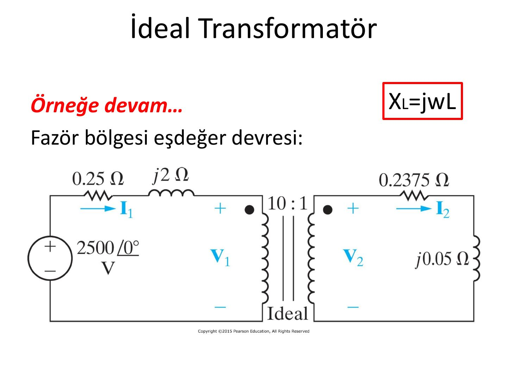
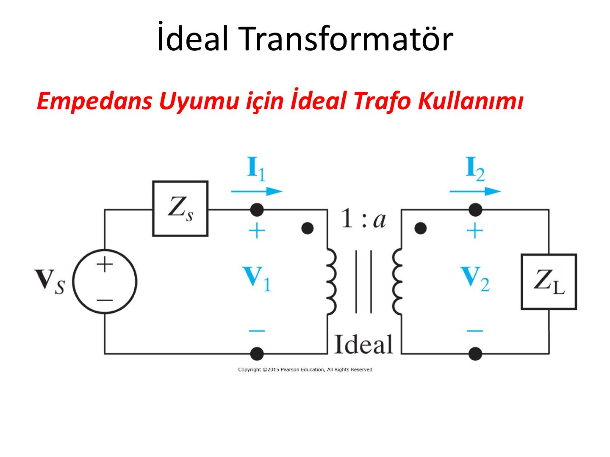

· EEM202
EEM202 Devre Teorisi II: İdeal Transformatör
EEM202 – Devre Teorisi II · 21.04.2014 · 16.10.2026
Bu yazı, Başkent Üniversitesi Elektrik-Elektronik Mühendisliği EEM202 Devre Teorisi II dersinde Yrd. Doç. Dr. Selda Güney'in hazırladığı İdeal Transformatör sunumunun içeriğidir (Nisan 2014). Altı slaytlık kısa bir sunum: devre şemaları görsel olarak, formüller ve değerler metin olarak aktarıldı. Orijinal PDF yazının sonunda indirilebilir.
Kutupluluğun belirlenmesi
İdeal transformatörde gerilim ve akım ilişkilerinin işareti, sargılardaki noktaların (nokta kuralı) ve referans yönlerin konumuna bağlıdır. Sunumdaki dört durum:
| Durum | Gerilim ilişkisi | Akım ilişkisi |
|---|---|---|
| (a) | V₁/N₁ = V₂/N₂ | N₁I₁ = −N₂I₂ |
| (b) | V₁/N₁ = −V₂/N₂ | N₁I₁ = N₂I₂ |
| (c) | V₁/N₁ = V₂/N₂ | N₁I₁ = N₂I₂ |
| (d) | V₁/N₁ = −V₂/N₂ | N₁I₁ = −N₂I₂ |

Sarım oranının gösterimi
Sarım oranı üç farklı şekilde gösterilebilir. Örneğin N₁ = 500, N₂ = 2500 sarımlı bir ideal trafo için:
- (a) Sarım sayıları doğrudan yazılır: N₁ = 500, N₂ = 2500
- (b) Oran olarak: 1 : 5
- (c) Birinci tarafa göre normalize edilmiş oran: 1/5 : 1

Örnek: vg = 2500 cos 400t V
Kaynak vg = 2500 cos 400t V; birinci tarafta 0,25 Ω direnç ve 5 mH endüktans, 10 : 1 oranlı ideal trafo, ikinci tarafta 237,5 mΩ direnç ve 125 µH endüktanstan oluşan yük.

Fazör bölgesi eşdeğer devresi
Endüktansların reaktansı X_L = jωL ile bulunur (ω = 400 rad/s):
- 5 mH → j·400·0,005 = j2 Ω
- 125 µH → j·400·125·10⁻⁶ = j0,05 Ω
- Kaynak fazörü: 2500∠0° V

Empedans uyumu için ideal trafo kullanımı
Son slaytta, iç empedansı Z_s olan V_s kaynağının 1 : a oranlı ideal trafo üzerinden Z_L yükünü beslediği devre gösterilir.
